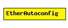

File: NetworkInterfaces/Ethernet/EtherFrame.msg
C++ definition: click here
Ethernet model components (EtherMAC, EtherHub and EtherBus) send this message at the beginning of the simulation, so that "auto"-valued "txrate" and "duplex" parameters of EtherMAC can be initialized. The purpose is similar to Ethernet Auto-Negotiation; however this is NOT meant to be the model of that Ethernet feature. (For example, EtherBus also sends an EtherAutoconfig message in the model, which obviously does not happen in a real Ethernet.)
The following diagram shows part of the inheritance hierarchy. Unresolved types are missing from the diagram. Click here to see the full picture.
| Name | Type | Description |
|---|---|---|
| txrate | double | |
| halfDuplex | bool |
message EtherAutoconfig { fields: double txrate = 0; bool halfDuplex = false; };